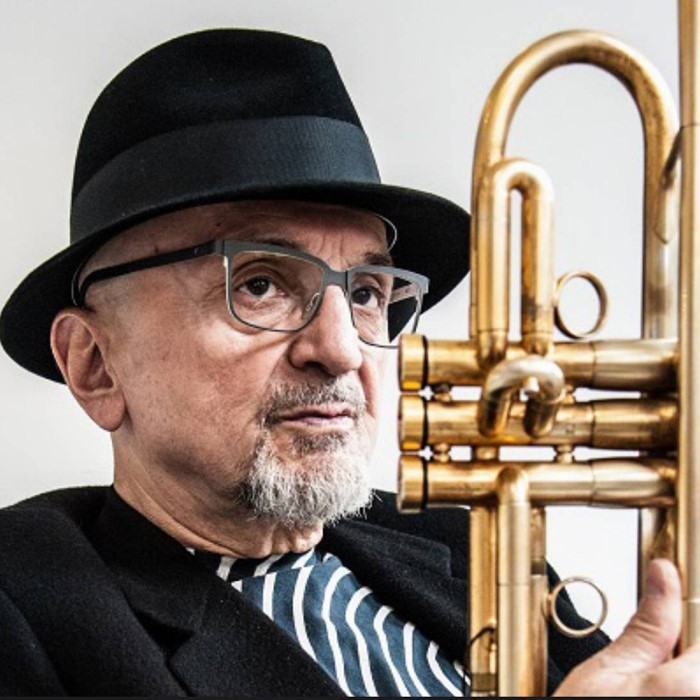

Tribute to Tomasz Stańko
Koncert stanowiący głęboki hołd dla unikalnego brzmienia i estetyki Tomasza Stańko. Nasz kwartet sięga po kompozycje mistrza, eksplorując ich słowiańską melancholię, liryzm oraz przestrzenne, improwizowane formy charakterystyczne dla europejskiego jazzu i wytwórni ECM. To propozycja idealna dla wymagającej publiczności, ceniącej głębię i emocjonalny przekaz w muzyce improwizowanej.
Konferansjerka (opcja na życzenie) Koncert wzbogacony o anegdoty z życia Tomasza Stańki i historie jego utworów, co buduje świetną więź z publicznością.